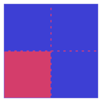
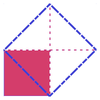

https://en.wikisource.org/w/index.php?title=The_Dialogues_of_Plato_(Jowett)/Meno&oldid=11706346, By Plato, written perhaps ~399 BCE.
The Platonic dialog in which Socrates demonstrates geometrical reasoning and
explains our capacity to reason as being due to anamnesis (recollection of
knowledge acquired before birth). Generally held to be one of the middle
dialogues
in which Plato began to advance his own positive views.
The Meno contains the oldest exemplar of deductive reasoning in the western tradition*While the geometrical claims involved were certainly known in other cultures (see donaldson2022-ancientMathematicsNotes) I am unaware of any other tradition in which general deductive arguments were presented to justify such claims, or considered as objects of investigation or interest in their own right.. In it Socrates teaches a hitherto ignorant slave boy how to construct a square double the size of a given square. (The relevant section begins on p. 40)
At first the boy mistakenly believes that the method to double the size of
a square is to double the length of each of the sides
(i.e. that the solid blue square below is double the area of the red one).

Socrates, however, convinces the boy that this new square will in fact be four
times as large as the original. Then Socrates shows him that the correct method
is to draw the square based on the diagonal of the original
(i.e. that the true double of the red square is in fact the dashed blue square
below).

The point is that the boy does not gain additional information. He neither observes some new feature nor does Socrates tell him what is the case. Instead, when the matter is clearly put before him, or perhaps broken up into simple enough steps (though this is a dangerously misleading analogy) he is able to discern the truth himself without further instruction. As Socrates puts it:
Attend now to the questions which I ask him, and observe whether he learns of me or only remembers.
Though Socrates' questions are doubtless leading:
Yet it does nothing to invalidate Plato's main point, which is that a previously untutored slave is able to recognise as indubitably true (or false) propositions brought to his notice for the first time. (Gulley, Plato's Theory of Knowledge, 1962, p.10.1)
The Meno is where Plato first introduces the theory of recollection. According to this theory all knowledge is recollected from previous lives. In the Meno the suggestion is these are recollections from previous lives in this world, but elsewhere Plato suggests that these are recollections from a divine realm in which we existed before being born as human.
But there is obviously a huge qualifier here. One does not learn that it is currently raining, or that in Sydney George Street crosses Pitt St by recollection from a previous life. So when Socrates claims that:
The soul, then, as being immortal, and having been born again many times, and having seen all things that exist, whether in this world or in the world below, has knowledge of them all; and it is no wonder that she should be able to call to remembrance all that she ever knew about virtue, and about everything; for as all nature is akin, and the soul has learned all things, there is no difficulty in her eliciting or as men say learning, out of a single recollection all the rest, if a man is strenuous and does not faint; for all enquiry and all learning is but recollection
His claim can only be made plausible by a tacit restriction as to the sort of
knowledge involved. It is knowledge of the nature of
things, knowledge
such as geometrical knowledge - knowledge of the unchanging eternal (which Greek
mystical traditions appear to have held to be the marker of true reality - that
which is, is and does not change). For our purposes it is tempting
The interaction with the slave boy is prompted by Meno putting forward a version of the paradox of analysis:
Meno: And how will you enquire, Socrates, into that which you do not know? What will you put forth as the subject of enquiry? And if you find what you want, how will you ever know that this is the thing which you did not know?
Socrates: I know, Meno, what you mean; but just see what a tiresome dispute you are introducing. You argue that man cannot enquire either about that which he knows, or about that which he does not know; for if he knows, he has no need to enquire; and if not, he cannot; for he does not know the, very subject about which he is to enquire.
Meno: Well, Socrates, and is not the argument sound?
One of the lovely features of Plato's dialogues is how many levels they work on simultaneously. As is well known, each of the characters Socrates interrogates is exemplifies the sort of personality that is attracted to the doctrines they espouse. Hence there is a sense both that these issues touch upon each individuals whole approach to life and not merely their intellectual beliefs in isolation.
In the case of the Meno, this layering applies to the geometrical argument as well. Tyro geometrician can appreciate the strength of Socrates argument and count themselves knowledgeable for being able to understand Socrates proof that the square on the diagonal is double the size of the original (see the second image above as above)
But there is a deeper mystery concealed within Socrates example. At one point Socrates asks the boy of the length of the sides of this doubled square
Socrates: Then the line which forms the side of eight feet ought to be more than this line of two feet, and less than the other of four feet?
Boy: It ought.
Socrates: Try and see if you can tell me how much it will be.
If we set the length of each side of the original square to 2, then the length of each side of the dashed blue square (the true double in area) is the square root of eight, which is an irrational number. The Greeks lacked a notation for naming such numbers.
It is tempting to think that there is a suggestion of an irresolvable mystery concerning the nature of virtue (the supposed overarching subject of enquiry for the dialogue). An intended moral may be that we can never achieve a precise definition of virtue but only ever closer (rational) approximations to it.